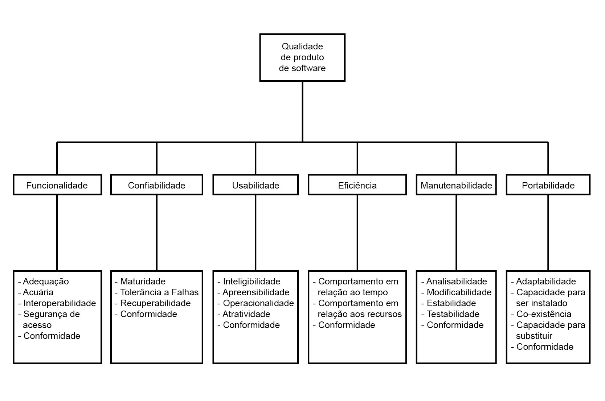

Modelo de Qualidade

Características de Qualidade
Para a avaliação de qualidade do software i-Educar, foram selecionadas e priorizadas três características do modelo de qualidade de produto da norma ISO/IEC 25010: Confiabilidade, Segurança e Manutenibilidade. A escolha foi guiada por um método explícito e quantitativo para garantir uma decisão robusta, alinhada aos objetivos do negócio e às necessidades dos stakeholders.
1. Método de Priorização: Matriz Risco × Impacto
A priorização foi conduzida utilizando o método da Matriz Risco × Impacto, que avalia as características de qualidade com base em três critérios objetivos, resultando em um peso final que determina a ordem de foco.
Os critérios utilizados foram:
-
Impacto no Negócio (Escala 1-5): Mede a severidade das consequências caso a característica de qualidade seja deficiente. Avalia o impacto sobre as operações, finanças, conformidade legal e confiança dos stakeholders.
-
Risco de Falha (Escala 1-5): Estima a probabilidade de ocorrência de problemas relacionados à característica, considerando a natureza do sistema (legado, multiusuário), a criticidade dos dados manipulados e o ambiente de operação.
-
Esforço de Avaliação (Escala 1-3): Pondera a complexidade, o tempo e os recursos necessários para realizar uma avaliação quantitativa e qualitativa da característica. Um valor maior indica um esforço maior.
A pontuação final foi calculada pela fórmula: Peso Final = (Impacto × Risco) / Esforço
2. Classificação e Aplicação da Matriz
A análise resultou na seguinte classificação, que abrange todas as características da ISO/IEC 25010 (exceto Usabilidade, conforme restrição do projeto):
| Característica | Impacto | Risco | Esforço | Peso Final | Prioridade |
|---|---|---|---|---|---|
| Confiabilidade | 5 | 5 | 2 | 12,5 | 1ª |
| Segurança | 5 | 4 | 2 | 10,0 | 2ª |
| Manutenibilidade | 4 | 4 | 2 | 8,0 | 3ª |
| Eficiência de Desempenho | 3 | 3 | 3 | 3,0 | — |
| Adequação Funcional | 4 | 2 | 3 | 2,7 | — |
| Compatibilidade | 2 | 2 | 3 | 1,3 | — |
| Portabilidade | 2 | 1 | 2 | 1,0 | — |
3. Justificativas da Priorização
A seleção das três características principais é justificada pelo contexto crítico do i-Educar como um sistema de gestão educacional para o setor público.
| Característica | Justificativa Estratégica e Impacto nos Stakeholders |
|---|---|
| 1. Confiabilidade | Principal Foco: A Confiabilidade recebeu a maior prioridade (Peso 12,5) por ser um sistema crítico para a continuidade das operações diárias de escolas e secretarias de educação. A perda de dados acadêmicos (notas, frequência, histórico) ou a indisponibilidade do sistema durante períodos letivos críticos (matrículas, fechamento de diários) gera um impacto operacional e social irreversível. Stakeholders: Garante a Secretarias de Educação a continuidade dos serviços públicos, a Professores a disponibilidade para registrar a vida acadêmica dos alunos, e a Administradores a estabilidade e integridade dos dados. |
| 2. Segurança | A Segurança (Peso 10,0) é fundamental, pois o sistema processa um grande volume de dados pessoais e sensíveis de menores de idade, enquadrando-se diretamente nas exigências da Lei Geral de Proteção de Dados (LGPD). Uma falha de segurança exporia dados, resultaria em sanções legais e quebraria a confiança da comunidade. Stakeholders: Essencial para Gestores educacionais (compliance regulatório), Alunos/Responsáveis (proteção de sua privacidade) e Desenvolvedores (uma única vulnerabilidade pode comprometer toda a aplicação). |
| 3. Manutenibilidade | A Manutenibilidade (Peso 8,0) é crucial para a sustentabilidade de um projeto de software livre como o i-Educar. Sua arquitetura legada exige esforço contínuo de evolução, correção de bugs e adaptação a novas regulamentações. Um código de fácil manutenção reduz o custo de propriedade a longo prazo e incentiva a colaboração. Stakeholders: Facilita o trabalho da Comunidade OSS (contribuições e correções), reduz custos para os Órgãos públicos e viabiliza a customização por Fornecedores locais. |
O diagrama abaixo representa o organograma das características e subcaracterísticas escolhidas para o processo de avaliação de qualidade do i-Educar:

4. Trade-offs Estratégicos Considerados
A priorização definida implica em decisões estratégicas e trade-offs conscientes:
-
Confiabilidade sobre Inovação Rápida: O foco absoluto em estabilidade, tolerância a falhas e recuperabilidade pode retardar a adoção de novas tecnologias ou arquiteturas. A decisão é garantir a operação contínua, mesmo que isso signifique um ciclo de inovação mais conservador.
-
Segurança Robusta sobre Flexibilidade: A implementação de controles de acesso rigorosos, validações estritas e auditorias pode aumentar a complexidade do desenvolvimento e limitar certas funcionalidades para garantir a conformidade com a LGPD e proteger os dados.
-
Manutenibilidade sobre Otimização de Desempenho: Optar por um código mais limpo, modular e bem documentado pode introduzir um leve overhead de desempenho. No entanto, essa decisão é estratégica para facilitar a evolução do sistema, reduzir o tempo de correção de falhas e diminuir a dependência de desenvolvedores especialistas.
5. Justificativa para Características Não Priorizadas
-
Eficiência de Desempenho: Embora relevante, análises preliminares indicam que os gargalos de desempenho do i-Educar estão mais associados à infraestrutura de hardware e rede das prefeituras do que a ineficiências críticas no software. Por isso, a avaliação do software em si não é o foco principal neste momento.
-
Adequação Funcional: O i-Educar é um sistema maduro e consolidado no mercado. Assume-se que suas funcionalidades essenciais (core) já atendem às necessidades primárias da gestão educacional, tornando a avaliação de novas funcionalidades um objetivo secundário.
-
Compatibilidade e Portabilidade: O sistema possui uma base de usuários e um ambiente de implantação estáveis (servidores Linux, acesso via navegador web). Questões de interoperabilidade com outros sistemas ou a necessidade de migração para outras plataformas não representam um risco sistêmico ou uma demanda imediata, justificando suas baixas prioridades.
Visão Geral do Modelo
Especificação do Modelo
As características de qualidade de software escolhidas para esta avaliação do I-Educar são: Confiabilidade, Segurança e Manutenibilidade. Essas dimensões, como demonstrado abaixo, foram selecionadas por representarem aspectos críticos para o funcionamento contínuo, a proteção de dados sensíveis e a evolução da aplicação.
Dimensões Avaliadas
Confiabilidade
- Objetivo: Garantir a estabilidade e disponibilidade do sistema em ambientes escolares.
Segurança
- Objetivo: Assegurar a proteção de dados sensíveis e a integridade das informações processadas pelo sistema.
Manutenibilidade
- Objetivo: Garantir que o software seja facilmente compreensível, modificável e evolutivo, permitindo contribuições da comunidade e adaptações futuras.
Justificativa para a adaptação do modelo para o software em questão
A norma 25010 abrange diversas características de qualidade, mas analisar todas elas representaria um escopo muito amplo para este projeto. Por isso, utilizamos o método de priorização Risco × Impacto para selecionar as dimensões mais críticas ao contexto do sistema. Dessa forma, as seguintes caraterísticas foram selecionadas, por refletirem os maiores riscos e impactos para os stakeholders e para a sustentabilidade do sistema.
Relação das características com o propósito da avaliação
A seleção das características de qualidade Confiabilidade, Segurança e Manutenibilidade não foi aleatória, mas sim uma consequência direta do propósito da avaliação, que é motivado por problemas reais enfrentados por usuários e direcionado a um público-alvo técnico.
O propósito da avaliação é:
- Indicar pontos para melhoria no produto.
- Adequar o produto às normas de qualidade.
- Obter um laudo técnico de sua qualidade atual.
Essa iniciativa foi impulsionada por reportagens que evidenciam as dificuldades de operação do i-Educar na rede pública, afetando diretamente a rotina de secretários escolares e outros profissionais da educação. Dessa forma, as características priorizadas abordam as causas-raiz mais prováveis para esses problemas e servem aos interesses dos stakeholders.
-
Confiabilidade: Esta característica está diretamente ligada às reclamações dos usuários sobre as "dificuldades com o sistema". Falhas, indisponibilidade e perda de dados são manifestações de baixa confiabilidade e impactam severamente a capacidade dos usuários de realizar tarefas essenciais.
-
Segurança: O i-Educar manipula um grande volume de dados pessoais e sensíveis de alunos e servidores. O propósito de adequar o produto às normas de qualidade tem como pilar o cumprimento de leis como a LGPD.
-
Manutenibilidade: O principal público-alvo deste laudo é a comunidade de desenvolvedores open-source. Para que as indicações de melhoria sejam efetivas e possam ser implementadas pela comunidade, o sistema precisa ser sustentável a longo prazo. Um código complexo e de difícil manutenção pode ser a causa subjacente da lentidão na correção de bugs e na evolução do software.